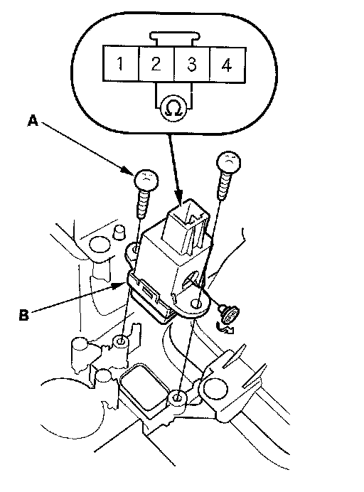

Air Bag Deactivation Indicator: Testing and Inspection
Passenger's Airbag Cutoff Indicator Illumination Bulb Test1. Remove the center panel:
- With navigation
- Without navigation

2. Remove the screws (A) and the passenger's airbag cutoff indicator (B) from center panel.
3. Check for continuity between the No. 2 and No. 3 terminals of the indicator. If there is no continuity; replace the bulb.
4. Reinstall the parts in the reverse order of removal.